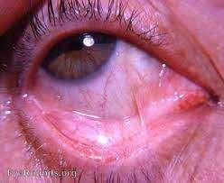

Conjunctiva · Degenerations of the Conjunctiva
Symblepharon: complications and treatment
Complications
- Diplopia: Due to limitation of eye movements.
- Visual affection: If the cornea is affected (scarring).
- Disfigurement.
- Malposition's of the lid margins.
- Exposure keratopathy.
Treatment
Prophylactic:
- A glass rod is coated with an antibiotic ointment in the fornix frequently to prevent or break adhesions
- Cortisone eye ointment to check fibrosis in the conjunctival sac
- A contact shell is used in the conjunctival sac till its healing.
Curative:
- Excision with or without graft (according to its size) as mucous membrane or amniotic membrane graft.
- Keratoplasty: If there is corneal opacity
